File: 000240.gt.txt (if the image is defective, simply delete all Arabic text and the line will be excluded)
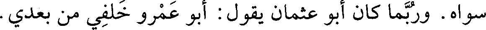
سواه. وربما كان أبو عثمان يقول : أبو عمرو خلفي من بعدي.
File: 000241.gt.txt (if the image is defective, simply delete all Arabic text and the line will be excluded)
238
File: 000242.gt.txt (if the image is defective, simply delete all Arabic text and the line will be excluded)
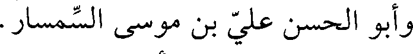
وأبو الحسن علي بن موسى بن السمسار.
File: 000243.gt.txt (if the image is defective, simply delete all Arabic text and the line will be excluded)
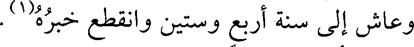
وعاش إلى سنة أربع وستين وانقطع خبره(1).
File: 000244.gt.txt (if the image is defective, simply delete all Arabic text and the line will be excluded)
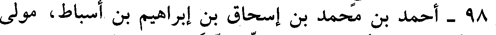
98 - أحمد بن محمد بن إسحاق بن إبراهيم بن أسباط، مولى
File: 000245.gt.txt (if the image is defective, simply delete all Arabic text and the line will be excluded)
جعفر بن أبي طالب، أبو بكر ابن السني الدينوري الحافظ.
File: 000246.gt.txt (if the image is defective, simply delete all Arabic text and the line will be excluded)
سمع أبا عبدالرحمن النسائي، وعمر بن أبي غيلان البغدادي، وأبا
File: 000247.gt.txt (if the image is defective, simply delete all Arabic text and the line will be excluded)
خليفة، وزكريا الساجي، وأبا يعقوب المنجنيقي، وعبدالله بن زيدان
File: 000248.gt.txt (if the image is defective, simply delete all Arabic text and the line will be excluded)
البجلي، وأبا عروبة، وجماهر بن محمد الزملكاني، وطبقتهم بمصر،
File: 000249.gt.txt (if the image is defective, simply delete all Arabic text and the line will be excluded)
والشام، والعراق، والجزيرة. وعنه أبو علي حمد بن عبدالله الأصبهاني،
File: 000250.gt.txt (if the image is defective, simply delete all Arabic text and the line will be excluded)
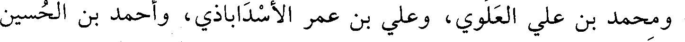
ومحمد بن علي العلوي، وعلي بن عمر الأسداباذي، وأحمد بن الحسين
File: 000251.gt.txt (if the image is defective, simply delete all Arabic text and the line will be excluded)
الكسار.
File: 000252.gt.txt (if the image is defective, simply delete all Arabic text and the line will be excluded)
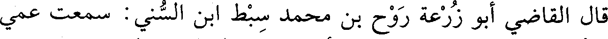
قال القاضي أبو زرعة روح بن محمد سبط ابن السني : سمعت عمي
File: 000253.gt.txt (if the image is defective, simply delete all Arabic text and the line will be excluded)
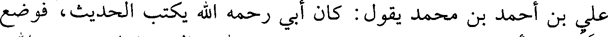
علي بن أحمد بن محمد يقول : كان أبي رحمه الله يكتب الحديث، فوضع
File: 000254.gt.txt (if the image is defective, simply delete all Arabic text and the line will be excluded)
القلم في أنبوبة المحبرة، ورفع يديه يدعو الله تعالى، فمات رحمه الله،
File: 000255.gt.txt (if the image is defective, simply delete all Arabic text and the line will be excluded)
وذلك في آخر سنة أربع وستين.
File: 000256.gt.txt (if the image is defective, simply delete all Arabic text and the line will be excluded)
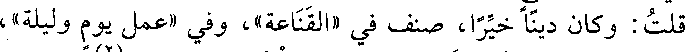
قلت: كان دينا خيرا، صنف في «القناعة» ، وفي «عمل يوم وليلة»،
File: 000257.gt.txt (if the image is defective, simply delete all Arabic text and the line will be excluded)
وغير ذلك، واختصر «سنن النسائي» ، وعاش بضعا وثمانين سنة(2).
File: 000258.gt.txt (if the image is defective, simply delete all Arabic text and the line will be excluded)
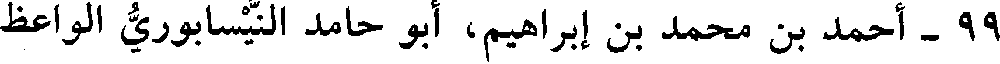
99 - أحمد بن محمد بن إبراهيم، أبو حامد النيسابوري الواعظ
File: 000259.gt.txt (if the image is defective, simply delete all Arabic text and the line will be excluded)
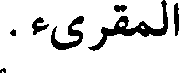
المقرىء.
File: 000260.gt.txt (if the image is defective, simply delete all Arabic text and the line will be excluded)
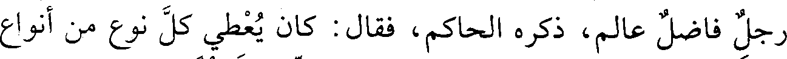
رجل فاضل عالم، ذكره الحاكم، فقال : كان يعطي كل نوع من أنواع
File: 000261.gt.txt (if the image is defective, simply delete all Arabic text and the line will be excluded)
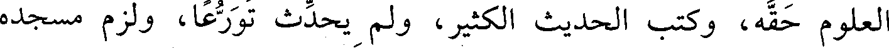
العلوم حقه، وكتب الحديث الكثير، ولم يحدث تورعا، ولزم مسجده
File: 000262.gt.txt (if the image is defective, simply delete all Arabic text and the line will be excluded)
قلت : روى عنه الحاكم حكاية.
File: 000263.gt.txt (if the image is defective, simply delete all Arabic text and the line will be excluded)
224
File: 000264.gt.txt (if the image is defective, simply delete all Arabic text and the line will be excluded)
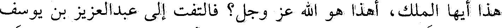
هذا أيها الملك، أهذا هو الله عز وجل؟ فالتفت إلى عبدالعزيز بن يوسف
File: 000265.gt.txt (if the image is defective, simply delete all Arabic text and the line will be excluded)
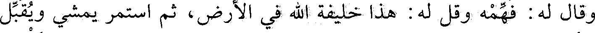
وقال له: فهمه وقل له: هذا خليفة الله في الأرض، ثم استمر يمشي ويقبل
File: 000266.gt.txt (if the image is defective, simply delete all Arabic text and the line will be excluded)
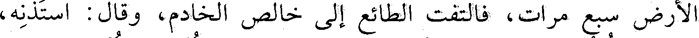
الأرض سبع مرات، فالتفت الطائع إلى خالص الخادم وقال: استذنه،
File: 000267.gt.txt (if the image is defective, simply delete all Arabic text and the line will be excluded)
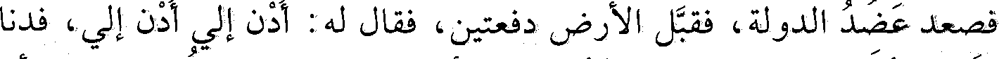
فصعد عضد الدولة، فقبل الأرض دفعتين، فقال له: ادن إلي ادن إلي، فدنا
File: 000268.gt.txt (if the image is defective, simply delete all Arabic text and the line will be excluded)
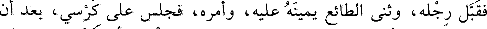
فقبل رجله، وثنى الطائع يمينه عليه، وأمره، فجلس على كرسي، بعد أن
File: 000269.gt.txt (if the image is defective, simply delete all Arabic text and the line will be excluded)
كرر عليه: اجلس، وهو يستعفي فقال له: أقسمت لتجلسن، فقبل
To Save: `Ctrl+s`, make sure to choose `Webpage, complete`!